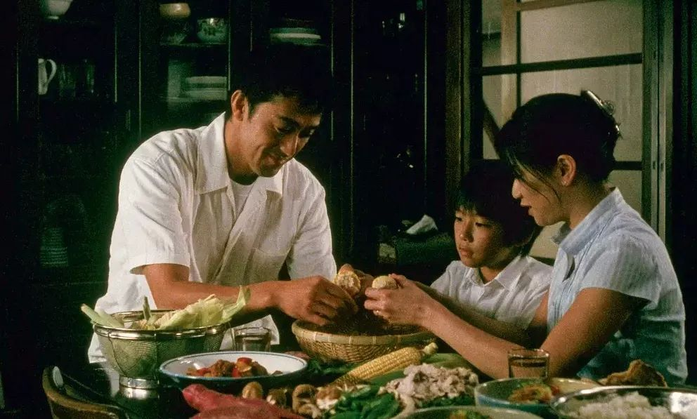
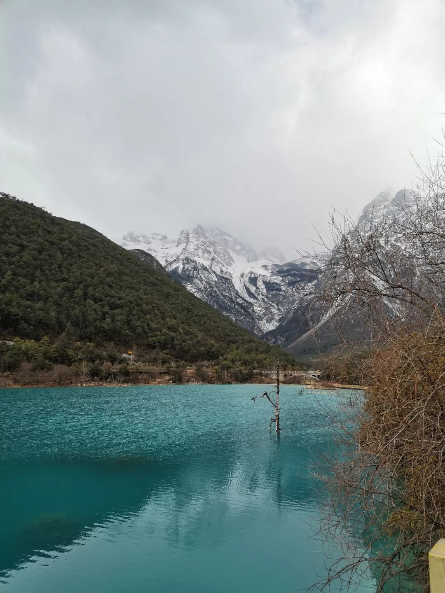
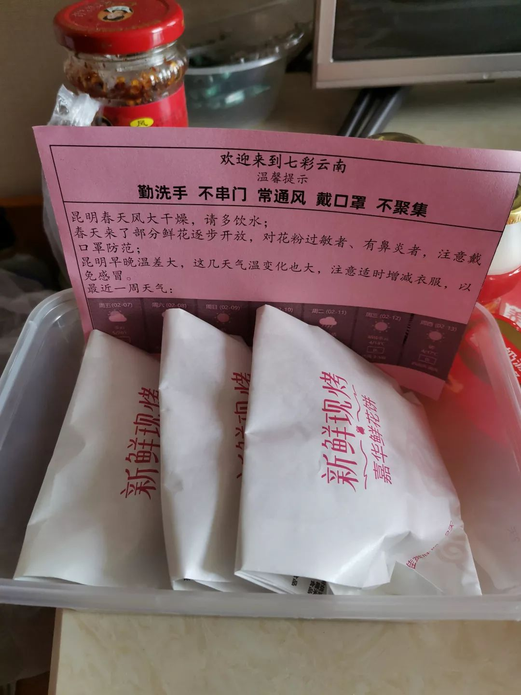

抗疫时期的武汉爱情故事：有人在街头流浪，有人在异地相思
原文链接 备份链接 疫情蔓延时，在无数依然相爱或曾经相爱的人眼里，只要能够平安，就是最好的庆祝 文 |《财经》特派武汉记者 刘以秦 编辑 | 余乐 2月14日，这是很多人眼里一个相爱的人相聚的日子。截止2月14日上午11点，武汉新冠肺炎 …

“

- 疫 情 之 下 -
这二十多天，我有足够的时间陪伴家人，正是有无数人在前方流泪、流汗、流血地付出，才有我们平静安心的生活，我会珍惜每一天。
”
1
闹铃响了，又是新的一天，拉开窗帘，红彤彤的鸡蛋大小的太阳在滇池上空升起，穿透云层的阳光在水面铺开一片金色，远处的山在轻薄的雾后若隐若现，近处白色的红嘴鸥飞过湖面。伸一下懒腰，今天是隔离的第14天了，明天就可以自由了吧。
我是因为“新型冠状病毒”而滞留在云南的众多武汉人中的一个。
公司1月18号开年会，19号正式放假。我们一家老小六人按计划于19日晚从武汉飞到丽江。此前虽然听说了不明肺炎，但我们都不是很重视，一是媒体并没有大量报道；二是据说起源于华南海鲜市场，我们在光谷，离这么远，想着也不会传到我们这儿；三是去云南过春节是在两个月前就计划好了的，机票、酒店也都订好了。
一路上，两个小家伙是最开心的，坐在飞机靠窗的座位，新奇地看着天空中的星星。
去年春节，我们一家六口人是在海南过的，六天时间自驾走遍了海南的沿海城市，和孩子一起玩三亚细白的沙子，和爱人欣赏海上日落、看千年的古盐田、在儋州书院感受东坡先生的豁达豪迈、在博鳌过除夕。看到满天的烟花，品尝当地美食，在酒店一家人快乐地看春晚，我们当时就决定下一年春节还在外面过！
云南之行同样是六天，在做了功课之后，我决定不自驾，主要原因是丽江、大理和昆明几个城市之间坐火车更方便，节省时间。
飞机上，我想象着在大研古镇享受悠闲的生活，晒晒太阳、逛逛古城，去玉龙雪山玩下雪，在苍山洱海许个愿，在滇池喂红嘴海鸥……那时完全没有想到我们会渡过一个非同寻常的春节，也经历了一段奇特的心理历程。
接机师傅皮肤黝黑，非常有礼貌，也很体贴，一路上不断给我们讲解丽江古城的景点。
第一天（20号）我们自由逛古城，看到流行的汉服和披风，给爱美的姑娘也买了一套，古城的石板路上、纳西族特色建筑前、缓缓流动的清澈河水边都留下了她可爱俏皮的身影。
古城已经有游客开始戴口罩，虽然心理上并不是很重视，但安全起见，我们还是买了一包。

2
第二天，我们去拉市海骑马走茶马古道，第三天去玉龙雪山玩雪。游玩的间隙，也看新闻、看朋友圈，武汉的新型肺炎报道越来越多了，有不少朋友问我是否在武汉，我还开心地说我早就出来旅游了，刚好躲几天。
在去雪山路上，导游知道我们是武汉来的，聊起肺炎，他说他托人买了几条虫草，据说对预防肺炎有帮助，看来这个疫情普通人都已经开始关注了。
大索道上玉龙雪山排队近两个小时，队伍缓慢移动，我们虽都带了口罩，但现在回想起来真是后怕，万一游客中有携带新型冠状病毒的，那种情况下，受感染概率会很高。

关注新闻愈多，我心里慢慢开始忧虑，尤其是看到有多起因感染新型冠状病毒而去世的人。从雪山下来，我感觉身上发冷，加上前两天都起得早，没有休息好，担心自己是否也中招了，越想心里越不安，感觉呼吸都有点难受了。老婆说这是自己吓自己，估计还是有高反。
第二天起来，不适症状都消失了。在新闻里，开始出现其他省份人对从武汉出来的人另眼相看的事情了。和家人商量，我们决定改变最后几天行程，不去昆明了，从大理或者丽江提前回武汉。
新闻报道说武汉开始限制出行了，我还笑着说幸亏我们早出来了。23号一早赶火车去大理，我们和其他人换了座位，一家六个人坐一个包厢，聊起肺炎，老婆交代岳父母尽量不要说武汉话，以免引起其他人的猜疑。
3
到了大理，我们顺利入住了预订酒店，订的是两晚。看到酒店门口停有鄂A的车，我和老婆开玩笑说我们并不孤单啊。后头有对小夫妻也看到了那辆车，大声说：“啊，有武汉的车，要不要报警啊！”我们听到，心里咯噔一下，很不是滋味。
酒店门口有个药店，我们想多买点口罩，一问说卖完了，我们马上心慌了。好在在大理古城买到了口罩，岳父岳母还不习惯戴，会经常取下来，他们都是土生土长的武汉人，讲话依然用武汉话，受了老婆不少白眼。
我心里酸楚着，武汉人什么时候出门这么低调了，都不敢暴露自己的身份，我们是普通人，也是受害者啊。
微信上关于疫情的消息泛滥，我开始担心我们是否能回武汉。果然，我们很快得知从丽江和大理飞武汉的航班都取消了。
这一天，武汉封城了，我意识到事态有点严重了。
4
大年三十这天，我们坐中巴去蝴蝶泉。检票时，检票员测体温，他看到我们的身份证，说我们是武汉来的，是重点检测对象呢。我心里惊了一下，有种秘密被说破的尴尬与惊慌。虽然我们体温都正常，但心里的不安早就蔓延了，游玩的兴致也没了。早早回到酒店，我们还是度过了一个愉快的除夕，吃了一顿丰富的年饭。
我们决定再改变行程，去双廊古镇住两天或者更久，看事态如何发展。初一一早网上叫个车去双廊古镇，上车没多久，师傅兼导游小赵就听出我们是武汉人。小赵一再强调自己是专业导游，有证的那种，对客人一视同仁，他并没有因为我们是武汉来的而有什么嫌弃。
他建议我们包他的车一日游洱海，最后把我们送到双廊。一日游的第一个景点就碰到闭门羹，张家花园闭园了。在喜洲古镇，我们品尝了两种口味的喜洲粑粑，玫瑰糖做的甜味粑粑我至今难忘。
我们欣赏了“三坊一照壁，四合五天井，走马转角楼”式的特色民居，而讲究人家的照壁价格也让我惊叹。
小赵把我们带到一个靠近洱海的旅游示范村，我们欣赏到了洱海最美的景色。统一的白色影壁、湛蓝的天空、各种形态的云以及它们在水中的倒影，还有时不时掠过的几只海鸥、水边扭曲弯折的老树，共同构成了一幅绝美的风景，暂时舒缓了我们的情绪。
那一刻，我觉得欣赏到了出行以来最好看的风景，那十多分钟，我们是自由的、快乐的。
小赵的导游群里时不时弹出各种消息，说双廊景区马上要关闭了，一下子打消了我们的兴致，导游也看出我们的心思，提前结束一日游，送我们到目的地。

5
到了客栈前台，看到我们的身份证，前台的几个人快速地交换了眼色，有个人摇了摇头，说上面通知不让接待武汉的游客。
我们都心慌了，马上到晚上了，这老小几个人能去哪儿住。老板犹豫了，悄声说别声张，让我们住一个晚上就走。晚上大部分时间，我和老婆都在到处找人、找信息，看哪能住、怎么可以回武汉。
有热心的同事、朋友、亲戚都给了很多建议和信息，患难见真情，很让我感动。老婆加了滞留云南湖北人的微信群，找到有大理、昆明的酒店愿意接待湖北人。
最后，我们还是决定去昆明，想着回武汉方便。第二天上午十点，客栈老板说景区封了，不能接待游客了，让我们马上搬走。
我买了去昆明的火车票，却联系不到愿意送我们去大理站的师傅，他们看到我武汉的电话号码，都推脱有事不来。最后央求着一个师傅，说了无数好话，终于答应送我们。一路上我们无心欣赏洱海，只想着一定要顺利去昆明啊！
量了体温，顺利进了候车大厅，我长舒了一口气，心里想着到昆明就好了，退可以在酒店休息几天，进可以想办法回武汉。网上看到有不少武汉人买以前经停武汉的车次，多买一站或者少买一站，在武汉站下。这时的我们真想早点回武汉，哪怕隔离在家也愿意，丝毫没有意识到武汉疫情的严重。
火车上闷热，加上戴着口罩，心情也是紧张的，我感觉自己身体都发热了，头昏沉沉的，我可千万别生病啊！
顺利入住酒店，老板是武汉人，给我们入住的湖北人建了个微信群。我开心地说终于找到大家庭了，在危难时，体会到了人间大爱，群里其他人经历也都差不多，其他酒店不收，看到老板发的信息，大家相聚在一起，为这，老板把其他省份的客人都推了。
这几天疫情发展是一天一个样，我的情绪也跟着波动，像过山车一样，在这天终于平静下来了。晚上睡了这几天以来最安稳的一个觉。我向关心我们的每一个亲朋好友都报了平安，说终于可以好好休息几天了。
第二天醒来，打开微信群，风云突变，爬楼看完信息，心情一下子不好了，原来有几个武汉籍的旅客没有办理退房手续，一早就离开酒店，坐高铁回了武汉。
这下当地派出所紧张了，把整栋楼封了，不让人进出。这栋楼里其他酒店没有生意做了，都怪罪到这个武汉老板头上，跑上门来谩骂甚至殴打店长。
酒店老板凭着乡情及一股血性，收留了我们这100多个湖北人，但没有想到发生了不可预见的事情。我们被限制了自由，不能出去，吃饭只能叫外卖。我有点后悔，没有抓住回武汉的机会，稍纵即逝，现在不可能了。
6
忐忑不安地等了两天，28号晚，当地社区安排了几辆大巴，大部分人都上了车，我们被拉到海口镇的工人疗养院。住的条件还不错，既来之则安之，我们安心睡了一觉。
我知道，我们暂时走不了了，被隔离了。住进来前两天，我还想着是从哪天开始算隔离，是离开武汉的19号，还是到昆明的26号，还是到工人疗养院的28号，我们哪天可以回家呢？
武汉的情况越来越严峻，每天新增病例很多，且没有下降的迹象。慢慢地，我不再胡思乱想了，在武汉的900万人都安心宅在家为国家做贡献，我们有住的、有吃的，还想什么呢？
海口街道办事处及工人疗养院对我们这150个湖北人关怀备至，早餐有牛奶、酸奶，正餐菜不重复，有时候还能吃到家乡菜，比如排骨藕汤，还有饭后水果。
在餐饮包里，经常还能看到加油鼓劲的话，读起来特别暖心。每日有人帮我们测两次体温，帮有特殊药品需求的人代买药品，指定两个超市为我们提供个性化的生活用品送货服务。

特别让我安心和感觉温暖的是街道办及工疗院成立了临时党支部，我们有20多个党员加入，以特殊形式召开了两次支委会，学习了国家领导人关于疫情防控的重要讲话，我们更加安心了。

隔离的日子，每天刷手机，信息铺天盖地，谣言满天飞，辟谣也很快跟进。武汉的实际情况，越来越清楚了，我理解了为什么要封城，为什么决定封城时，钟院士会流泪了，因为他知道武汉人民会做出巨大牺牲。
在疫情暴发初期，有太多人因为住不了院、得不到救治而在痛苦中煎熬甚至失去生命。不幸失去生命的人，不是每天上报的总数，而是一个个曾经鲜活的生命。
每天浏览各种信息，有太多让我热泪盈眶的人和事，我真心感谢每一个帮助湖北抗击疫情的人，无论他们来自哪里、从事什么工作岗位。这二十多天，我有足够的时间陪伴家人，正是有无数人在前方流泪、流汗、流血地付出，才有我们平静安心的生活，我会珍惜每一天。
昨天滇池下了大雨，雨后彩虹如期而至，我们几乎每个人都冲到窗边，惊叹彩虹绚烂的色彩。我一个十多年没联系的朋友在qq上给我留言“等云开雾散”。是的，云开雾散，彩虹来，我们等来了那一天。

作者于2月11日滇池。
-END-
作者 | 康少陵，青年作者。
题图|《步履不停》剧照
“我故”故事练习生培养计划，详情请戳：

About us
主编：鹿｜本期编辑：鹿
Contact us
投稿/商务合作/咨询
微信后台留言 or 邮箱：wmsygsdr@163.com
**我们是有故事的人｜华中科技大学出版社官方故事平台**
原文链接 备份链接 疫情蔓延时，在无数依然相爱或曾经相爱的人眼里，只要能够平安，就是最好的庆祝 文 |《财经》特派武汉记者 刘以秦 编辑 | 余乐 2月14日，这是很多人眼里一个相爱的人相聚的日子。截止2月14日上午11点，武汉新冠肺炎 …
原文链接 备份链接 办理值机的柜台，工作人员看到湖北签发的护照，下意识地向后躲了躲，接着拿起电话，用英文说着什么。 口述 | 王丰 整理 | 吴雪 武汉市长周先旺1月26日晚在新闻发布会上说有500多万武汉人离开武汉，而我们一家三口就是 …
原文链接 备份链接 这段时间，除了关于疫情本身的讨论，一些新的话题不断加入。单读征文今天的来信，来自一位选择离开家乡的武汉人。武汉人在外省的处境令人堪忧，从直面病毒的恐慌，到遭遇歧视的愤懑，武汉人不仅是这场疫情中最直接的受害者，还成为后续 …
原文链接 备份链接 非常时期，武汉成了全国人民挂念、祈福的城市。封城后，武汉人民的真实生活是什么样？ 武汉在发生哪些变化？ 正和岛自1月26日起特别推出“叶青专栏”。叶青是一位定居武汉40年的市民，也是一名学者和官员。在过往多期的专栏文章 …
原文链接 备份链接 2月8日，元宵节。在这一天，一家人和和美美地吃完象征着团圆的汤圆，传统的农历春节就进入了尾声。但没能回到老家浙江、留在武汉的申明，看了看窗外的天气，云朵层层，太阳偶尔洒下些许阳光。起床后，他一边听着疫情播报，一边准备亲 …